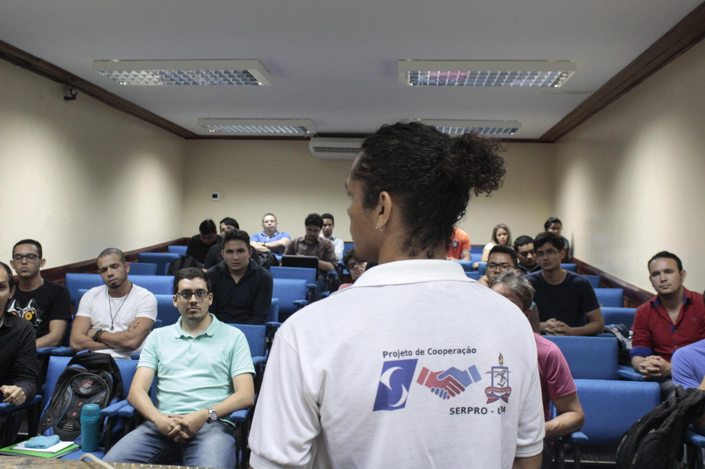
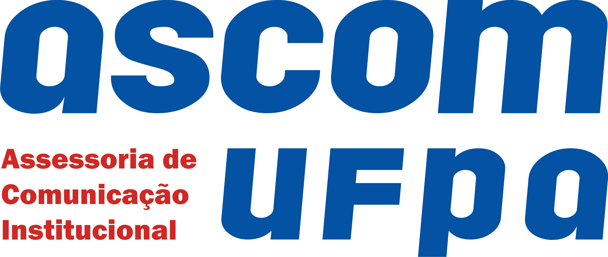
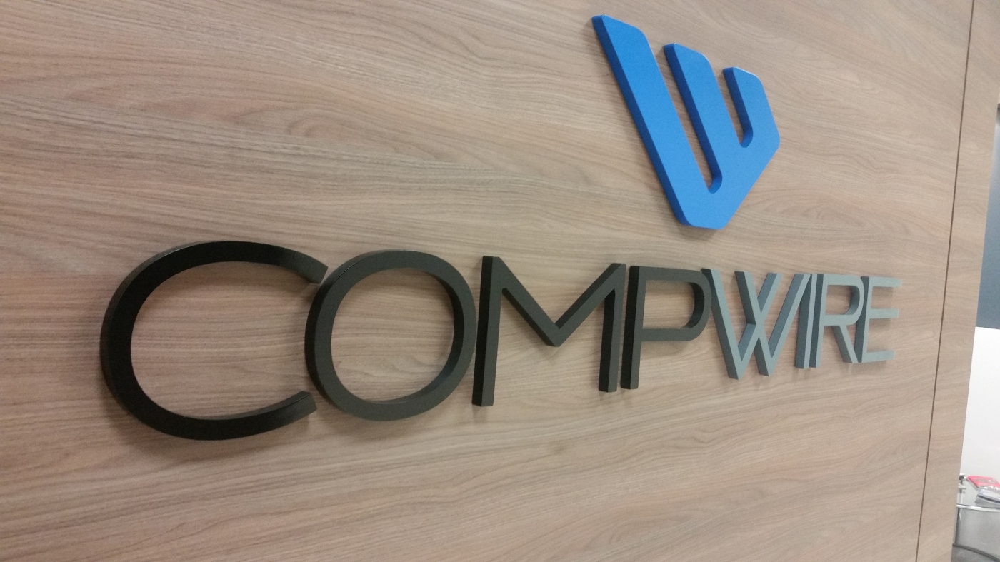

Sobre STSI 2018-1

Semana de Tecnologia e Segurança da Informação
O evento realizado anualmente pelo Centro de Tecnologia da Informação e Comunicações da UFPA, reúne especialistas das áreas de desenvolvimento, infraestrutura, redes, administradores de sistemas e segurança da informação
para compartilhar e fomentar tecnologias, novos paradigmas computacionais e cultura de software livre. O público-alvo do evento são usuários finais de computadores, estudantes e profissionais da área de T.I.
Programação
| Abertura do Evento / Fundamentos de SegInfo | Solução de Armazenamento e Auditoria de Logs com Graylog | Introdução ao Docker | Feature Driven Development | Os perigos das Botnets | |
|---|---|---|---|---|---|
| Computação Forense e Perícia Digital na Investigação de Crimes Cibernéticos | Rust, uma linguagem de sistemas para os tempos modernos | Infrastructure as code | Existe mundo além de oop e procedural (ou sobre paradigmas e como começar com programação funcional) | Monitoramento com Zabbix | |
| Mineração de Dados em Fontes Abertas | WebAssembly | Terraform+AWS+Servidores em Escala | Cordova 101 | Fundamentos de Gestão de T.I. | |
| Análise Pericial de Imagens Digitais Através de Inteligência Artificial com Python | Medição de Software | Soluções de SegInfo Palo Alto | Nginx Unit | ||
| Fundamentos de Análise de Malwares | Science DMZ | O Caminho do DevOps: Como e porque se tornar um DevOps | As Facetas do Desenvolvimento Ágil (Remate) | Criptomoedas: primeiros passos | |
| A Liberdade de Expressão e o Direito à Privacidade Online | Blockcerts: Um padrão aberto para certificados (documentos) | Container OS: Linux Kit vs CoreOS vs Debian | Um zumbi chamado Agilidade, versão do Paulo Moura | Gamificação | |
| Testes de Intrusão em Redes sem Fio | Site Survey: conceito e aplicações | Auto-scaling com Kubernetes | As dores e as delícias da integração contínua | Gerênciador de Conteúdo Drupal |
Palestrantes
Inácio Gorayeb
Perito em Computação ForenseDeivison Pinheiro Franco
Associate Editor at eForensics MagazineFlávio Ramon Almeida de Souza
Profissional independente de SoftwaresCleber Soares
Analista de infraestrutura e suporte - Especialista em Redes de ComputadoresDaniel Müller
Especialista em Computação / Perito Forense ComputacionalJoão Salvatti
Analista de Tecnologia da Informação na Universidade Federal do ParáJosé Augusto Quaresm
Estagiário do Centro de Tecnologia de Informação e Comunicação - UFPAVagner Nascimento
Senior Research, Professor, IT ManagerBilly Pinheiro
Pesquisador de Pós-Doutorado do PCC/UFPAMarlo Pimentel
Bacharel em Sistema de Informação pela Universidade Federal do Pará (UFPA)Alexandre Ichihara
Analista de TI at Banco da Amazônia S/ABianca Ramos
Suporte técnico de redes - Secretaria de Planejamento do Estado do ParáThiago Almeida
Infrastructure Engineer at DevGrid | Experienced Linux System Administrator | Docker | DevOps EvangelistReinaldo Carvalho
Analista Judiciário - Tribunal Regional do Trabalho da 8ª Região PA/APRaimundo Viégas
Professor / Pesquisador do ICEN - UFPAAnderson Goes
PRODEPA at Project ManagerRomulo Albuquerque
Researcher at Research Group on Computer Networks and Multimedia Communications (GERCOM-UFPA)Carlos Eduardo de Oliveira Nogueira
Coordenador de Datacenter na UFPAHiago Prata
Computer engineering student, network security enthusiast, sysadmin under trainmentLucas Vasconcelos
DevOps, SysOps, Experienced Developer, Linux Administrator and Engineering StudentCaio Cesar Fernandes
Intern at UFPa Data CenterCaio Sanches Bentes
DevOps | SysOps | Experienced Linux System Administrator | Experienced Developer | Engineering StudentWillian Paixão
Senior Java Developer, Experienced Linux System Administrator, Newbie DevOpsAgnaldo Marinho
SysAdmin Datacenter at CTIC-UFPA | Front-End Web Developer | React Native | Node js | Golang | RustLangPaulo Alexandre Aquino da Costa
Software Developer
Paulo Moura
Engenheiro de SoftwareLuiz Sanches
Desenvolvedor de software na Nômade TecnologiaMarcos Ferreira
Desenvolvedor FullstackPaulo Igor Alves Godinho
Entrepreneur / DeveloperNilson Cechetto
Information Security Professional - Compwire Informática S/ALocais
Auditorio Setorial Básico 2
Auditorio CAPACIT
CSSI/CTIC
O CTIC, como órgão central de tecnologia da informação da UFPA, possui como:
Missão: Prover soluções de Tecnologia da Informação e Comunicação (TIC) para a comunidade universitária da UFPA.
Visão: Ser referência entre as IFES da Região Norte nas soluções de TIC aplicadas para a comunidade acadêmica.
Valores: Ética, modernidade, eficiência, transparência, criatividade, responsabilidade social e comprometimento.
Realização
Apoio
 